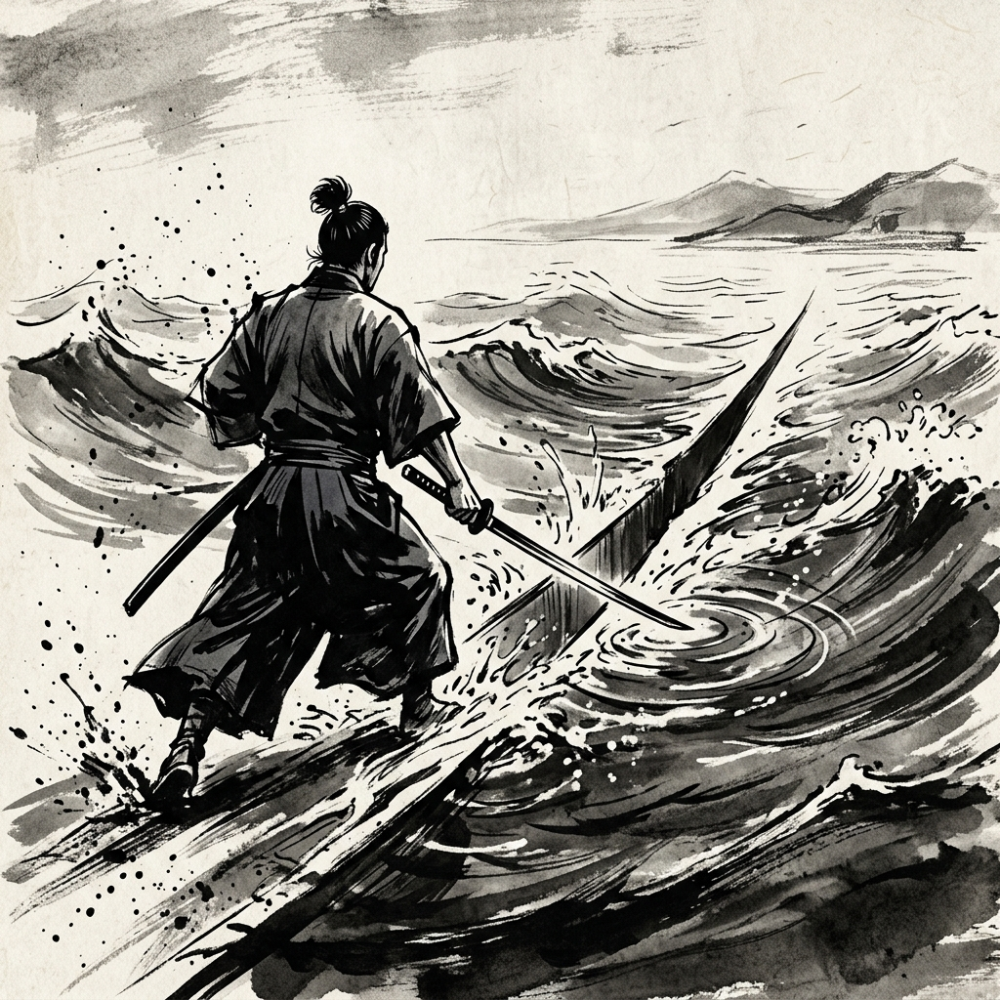
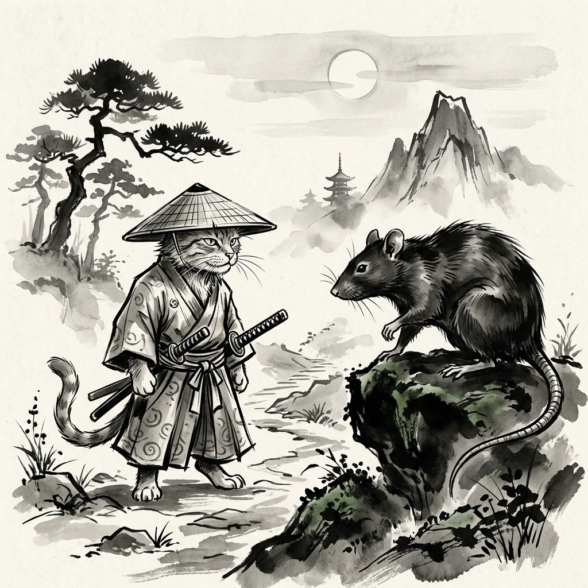
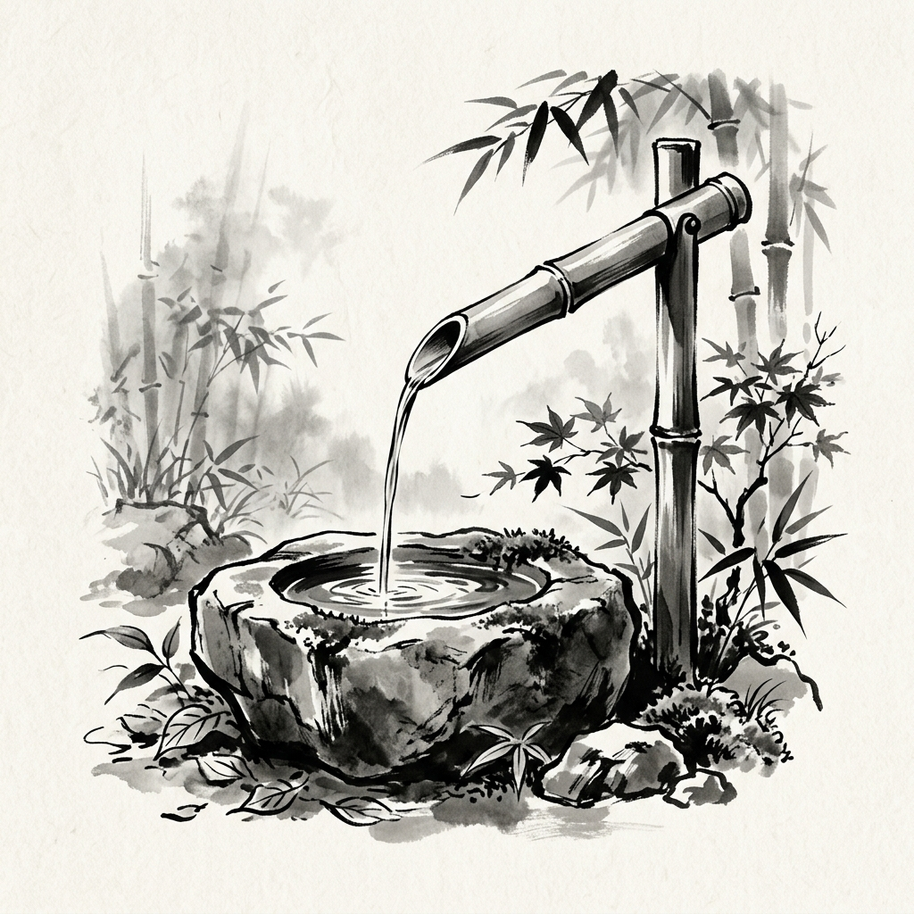

Mushin — "no mind" — is one of the most profound concepts in Japanese philosophy. Imagine your mind as water. Normally, when a threat or challenge appears, the mind grabs onto it, analyzes it, and worries about it. This grabbing distorts your perception.

The Old Cat
A master swordsman found his home plagued by a rat of unusual size and ferocity. His swiftest, most aggressive hunting cats were easily defeated. Humiliated, the swordsman drew his wooden practice sword to strike it down himself—only for the rat to leap, bite his face, and vanish into the shadows. In desperation, he summoned a legendary old cat from a neighboring village.
When she arrived, she appeared ancient, slow, and half-asleep. Yet, the moment she gently ambled into the room, the terrifying rat froze completely. Without a shred of drama, effort, or sudden movement, she simply caught it and walked out.

That night, the defeated younger cats gathered around her, begging to know her secret. "I used no technique," she murmured. "I simply walked into the room." When they pressed her further—asking about her manipulation of ki, her soft power, her hidden strategies—she remained quiet for a long time. Finally, she answered:
"The moment you think about how to catch a rat, the rat already knows."
The rat that defeated everyone was unbeatable because pure desperation had emptied its mind. It had forgotten fear and survival. The old cat defeated it the same way—except she didn't need desperation. Decades of training had quietly burned away everything that wasn't pure presence.

Cultivating No-Mind
- 1. Repetition until the body knows: Practice until the skill moves below thought. Pattern recognition shouldn't feel like recalling; it should feel like seeing.
- 2. Single-task completely: One thing at a time. This trains the mind to stop splitting itself.
- 3. Notice the commentator: When inner commentary starts, observe it like weather. It loses power the moment you stop treating it as truth.
- 4. Breathe before pressure: One slow exhale before a hard moment buys one second of spaciousness. One second is enough.
- 5. Stop performing: Care more about the task than your performance of the task. Mushin collapses the moment you start watching yourself do it.